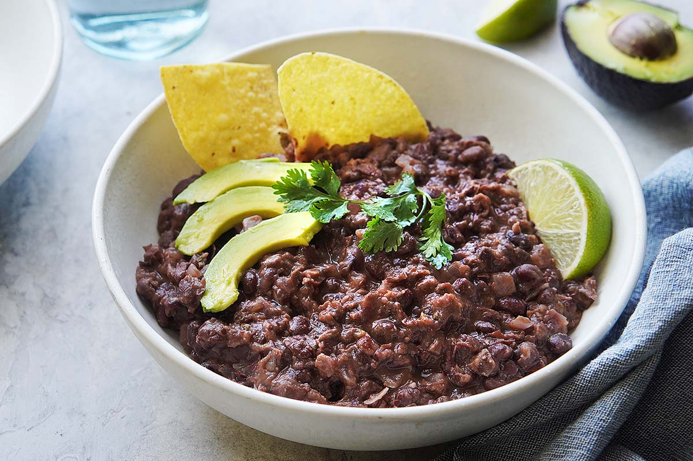

All purpose refried beans

An all purpose protein source to keep in your fridge for when you're out of time or ideas
Refried beans are an easy, flavourful protein source you can make ahead of time with a large variety of uses e.g. on a torilla for breakfast, add it to a burrito bowl, or if they're good enough as the main star of a dish you make.
Ingredients
- 2 cans of black bleans
- 250ml of chicken stock
- 2 bay leaves
- 1 tablespoon of lard
- 2 garlic cloves (minced)
- 2 spring onions
- 2 limes
- 1 teaspoon of chipotle powder
- Kosher salt to taste
- Cracked black pepper to taste
Recipe
- Add the black beans, bay leaves, stock, and spring onions (whole) to a heavy bottom pot. Simmer until there is only a little bit of liquid left.
- Remove the bay leaves and spring onions.
- Add the minced garlic, chipotle powder, salt and pepper to the beans.
- Transfer the beans to a preheated wider pan with the lard in it, and with a potato masher start mashing the beans until they get to the consistency you are after.
- Add lime juice to your taste and adjust salt levels to your preference.